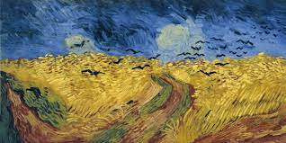
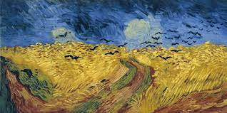

¿Quién es?
Desde joven tuvo inclinación hacia el dibujo. Su primer trabajo fue en una galería de arte. Más tarde se convirtió en pastor protestante y en 1879, a la edad de veintiséis años, se marchó como misionero a una región minera de Bélgica, donde comenzó a dibujar a la gente de la comunidad local. En 1885 pintó su primera gran obra, Los comedores de patatas. En ese momento su paleta se componía principalmente de tonos sombríos y terrosos. La luz y la preferencia por los colores vivos por la que es conocido surgió posteriormente, cuando se trasladó al sur de Francia, consiguiendo su plenitud durante su estancia en Arlés en 1888
La calidad de su obra fue reconocida solo después de su muerte, en una exposición retrospectiva en 1890, considerándose en la actualidad uno de los grandes maestros de la historia de la pintura. Influyó grandemente en el arte del siglo xx, especialmente entre los expresionistas alemanes y los fauvistas como Matisse, Derain, Vlaminck y Kees Van Dongen. Falleció a los treinta y siete años de edad por una herida de bala; aún no se sabe con seguridad si fue un suicidio o un homicidio involuntario. A pesar de que existe una tendencia general a especular que su enfermedad mental influyese en su pintura, el crítico de arte Robert Hughes cree que las obras del artista están ejecutadas bajo un completo control; de hecho, el pintor nunca trabajó en los periodos en los que estaba enfermo
 
